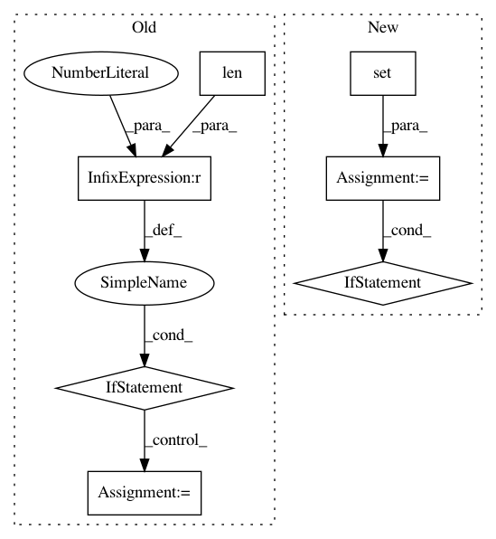

bc844551d6d2829668b9ed8dd5cee3ffdb48f0d8,osmnx/utils_geo.py,,_intersect_index_quadrats,#Any#Any#Any#Any#,341
Before Change
precise_matches = possible_matches[possible_matches.intersects(poly)]
points_within_geometry = points_within_geometry.append(precise_matches)
if len(points_within_geometry) > 0:
// drop duplicate points if any
points_within_geometry = points_within_geometry.drop_duplicates(subset="node")
else:
// after simplifying the graph, and given the requested network type,
// there are no nodes inside the polygon - can"t create graph from that
// so throw error
raise Exception("There are no nodes within the requested geometry")
utils.log(f"Identified {len(points_within_geometry)} nodes inside polygon")
return points_within_geometry
After Change
// loop through each chunk of the geometry to find approximate and then
// precisely intersecting points
points_in_geom = set()
for poly in multipoly:
// find approximate matches with spatial index, then precise matches
// from those approximate ones
poly = poly.buffer(0)
if poly.is_valid and poly.area > 0:
possible_matches_iloc = sindex.intersection(poly.bounds)
possible_matches = points.iloc[list(possible_matches_iloc)]
precise_matches = possible_matches[possible_matches.intersects(poly)]
points_in_geom.update(precise_matches.index)
if len(points_in_geom) < 1:
// after simplifying the graph, and given the requested network type,
// there are no nodes inside the polygon - can"t create graph from that
// so throw error
raise Exception("There are no nodes within the requested geometry")
utils.log(f"Identified {len(points_in_geom)} nodes inside polygon")
return points_in_geom
In pattern: SUPERPATTERN
Frequency: 4
Non-data size: 7
Instances
Project Name: gboeing/osmnx
Commit Name: bc844551d6d2829668b9ed8dd5cee3ffdb48f0d8
Time: 2020-07-01
Author: boeing@usc.edu
File Name: osmnx/utils_geo.py
Class Name:
Method Name: _intersect_index_quadrats
Project Name: dgasmith/opt_einsum
Commit Name: a66a9216d2d3fd193782640b4e9eb4f50f4b3697
Time: 2015-05-13
Author: malorian@me.com
File Name: opt_einsum.py
Class Name:
Method Name: _path_optimal
Project Name: pantsbuild/pants
Commit Name: d77483eb6acf78d3a924414f2ae1fafe85b2c5d1
Time: 2018-03-01
Author: john.sirois@gmail.com
File Name: src/python/pants/task/testrunner_task_mixin.py
Class Name: PartitionedTestRunnerTaskMixin
Method Name: _execute
Project Name: dgasmith/opt_einsum
Commit Name: 802a991087c8ba2620e2f98aa709af8f530f8b93
Time: 2018-03-22
Author: john.gray.14@ucl.ac.uk
File Name: opt_einsum/blas.py
Class Name:
Method Name: can_blas